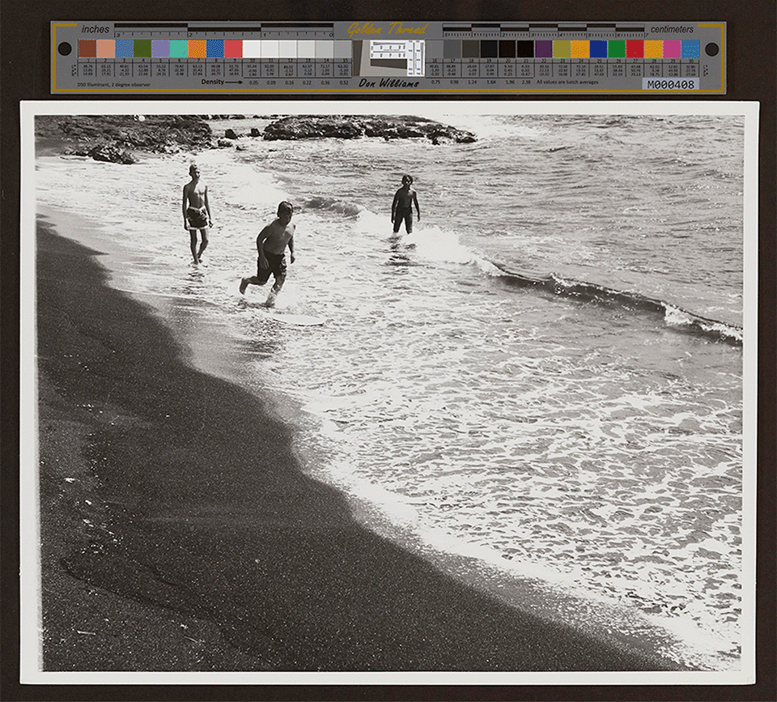
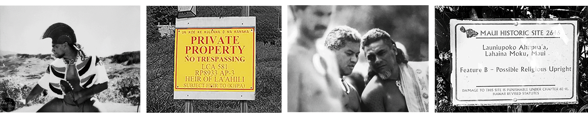

PROJECTS
ABOUT
SOCIAL PRACTICE
RESEARCH
PROJECTS
ABOUT
SOCIAL PRACTICE
RESEARCH
Sovereign Field
When I began researching my ancestral (ʻohana) land, I started with my fatherʻs childhood in the ahupuaʻa of Punaluʻu, in the Kaʻū District of Hawaiʻi Island. I have some of his personal journals, my relatives recountings, even my grandfather's voice on a cassette tape my older sister recorded in 1988. I had been there with my father, but never on the actual property because it seemed impossible to find. The landscape had changed after the houses were swept off their foundations on November 29th 1975 by a 7.6 meter tidal wave. With the help of my Uncle, we went back in 2023 to help my brother bury his son's 'iewe [afterbirth] according to ancestral tradition, and only then found the well forged into th earth the original stones. The area was overgrown, a kind of frontier speckled with abandoned cars, tall grass, mosquitos and coconut treees. I wondered what life was like in the house by the ocean ("Hīnano"), and found glimpses in an archival image of boys who would've been similar age of my father and his two brothers. Much of the surrounding area was passed to the Kekaula family in a Land Comission Award, which was then sold to Black Sands LLC, a transnational corporation that build a nearby golf course. The area is incredibly important in our public history, as one of the most cited academic works by a native Hawaiian is The Polynesian Family System of Kaʻū, penned by Mary Kawena Pukui. Pukui interviewed my Great Grandmother in the course of her research for that book. In the State Archive, I also found late 19th century records of the Ministry of Interior arresting a Punalu'u man that had built a wall along the main road. Around this time, I came across videos of Uncle Keʻeaumoku Kapu who successfully reclaimed his ancestral land. His story is central to the larger struggle to reclaim our ancestral lands.

The Law
Keaumoku Kapu won a landmark case through the Hawaii circuit courts (MAKILA LAND CO., LLC Vs. HEIRS OR ASSIGNS OF APAA( K), ET AL., Defendants), which demonstrated three key points of a larger investigation into land in Hawaiʻi. First, large developers descend from a reconstructed genealogy of land, a manufactured modern chain linked to the original sugar plantation. Second, their original claims of how they acquired the land (land linked to particular uses established by the Land Board in 1848) lack credible documentation. Finally, the reappropriation of land toward development is responsible for many of Hawaiʻiʻs most pressing problems (which crystalize in the Lahaina fire in August 2023). Breaking land up means interrupting networks of flow (from entire genealogies tied to the land) to the wai (water) that feeds the islandʻs once vibrant ecosystem. States legislate these divisions as though they were natural. For instance, consider the Document Center of Maui County, which lists Tax Map Key designations where "[r]eal property is mapped and indexed numerically according to a tax map key system." This integration of land into the tax grid assumes the state's right to admiminister territory outside of existing legal determinations set forth in the 1848 Māhele. As such, the state produces a fiction that "tax map keys identify individual pieces of property for tax purposes," when these keys are also used in debates over right to property in a landscape of displacement.
In the case of Hawaiʻi, the annexation of Hawaiʻi to the United States in 1898 is undermined by the fact that no treaty exists to give official jurisdiction to the United States (for instance, the administration of land for "tax purposes"). Enter maps. The use of tax maps as a rhetorical tool substitutes a mythology of legitimacy for a relationship that does not yet exist. "Aʻole TMK" is a call to resist the maps of the illegitimate state.

Sovereign (Ea Ea) follows Keʻeaumoku Kapu and his ʻohana's reclaiming of "kuleana" land that was bestowed as a Land Commission Award in 1848. The 19th century acquisition of these lands by foreign entities coincides with the strategic modes of occupation that attenuates another story of fire, contemporary resistance, and indigenous futures.